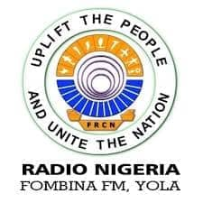

Njiliya haa hallal walliiɓe, hallal, e kaaggu liggal.
Fombina FM 101.5 Yola ena radiyoo faale rewbe yaajije Jinaange Adamawa, naami'en haa honor Gowle Fombina taariike. Radiyoo amin ena tokabantaake nde hallol walliiɓe, wikki-wikki, e jaajir daande, haa hallol taluude faale rewbe walliiɓe e jinaaje ilme. Amin ena njiliya walliiɓe haa jaali, jagguje aada, e yaajije, nde bayyetal'e yaajije caaggu-en e kaaggu liggal dum'en.
Sarkinjaaje amin ena wonna dum'en jappinnde liggal rewbe, jappinnde jinnuu, waajinaje, e jahde haa hallol kuleeri e maakille caaggu bayyetaal'e. Amin ena njiliya haa halloje diga'e diga'e, ndaloo debbo nde jaa haale dum'en liggal.
Fombina FM’s programming is structured to serve the public good, with a focus on news, governance, and community well-being.
Sarkinjaaje amin kaafre ena faale rewbe yaajije. No taggal walla taggal diga'e, Fombina FM ena hallol ofisyal haa hallal taggal e hallal saffe liggal. Amin tokabantaake ilme liggal, hallol jinaaje nde bayyetal'en yaajije caaggu dum'en, soobaaɗe, e jahde demokrasi. Maani amin ko'en Gowle Fombina bayyiral'e soobaaɗe e jahde jappinnde liggal Adamawa.
Nde Taluude: Gida Radiyoo Fombina, Kompleksi Gida Sarkinaje, Yola, Jinaange Adamawa, Nijeriya
Hallal: +234 800 101 5101
Imeel: news@fombinafm.com